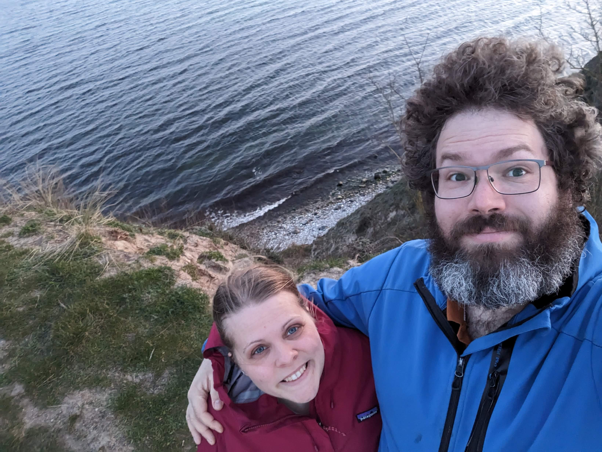
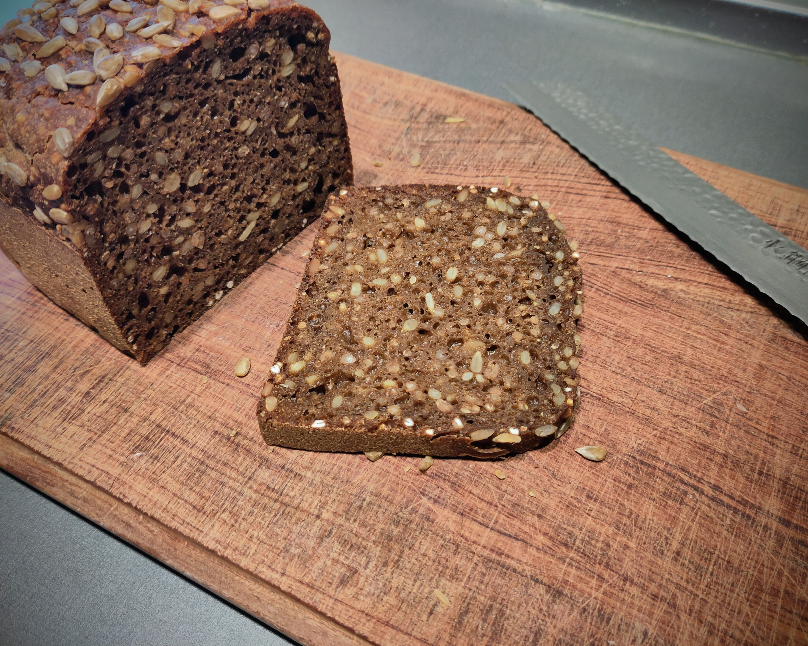

Hello! My name is Malthe, and I am a senior developer at Netcompany. I have been working on critical solutions for public institutions for the past 9 years.
I am 37 years old and I live in Odense with my wife Maja and our three kids Aslan, Alba, and Noa. Maja and I met through a common friend when attending each our gymnasium in Vejle and Fredericia in Jutland. We married in 2010 and moved to Odense for our studies, and became parents to Aslan and Alba while studying. I obtained a Bachelor of Science in Robot Systems and started in Netcompany in 2016. 10 days after starting in Netcompany, we welcomed Noa to the world.
As most other boys growing up in the late 90's and early 00's, and as most kids today, I was fascinated by screens and computers. The first computer we got was a hand-me-down Power Macintosh, and it was used for SimCity 2 and SimAnt (a game I'm still not sure I understand). Then we got a private label Mycom pc with a GeForce 2 MX 400 GPU and I could start playing games like GTA and Dune 2000. Since I could play games, everyone assumed I was good at "computers" so I started making webpage. As in singular, a site for my brother to showcase his magician profile. My brother was later picked out as one of the 10 best young magicians across Denmark by Steen Pagani (owner of the largest magician shop in Denmark) to perform in Cirkusbygningen in Copenhagen and potentially win a warm up gig for an established illusionist. I'm entire certain that the website I created made no difference whatsoever.
I always liked to do important stuff but stay in the background. When playing soccer, I was the goalie. I was part of the skolepatrulje/crossing guard at my local school. I picked up the bass as 13 years old, and while I still have that bass, I stopped playing for real at 19. It was and is fascinating to me how the bass is mostly ignored yet essential. In my job in Netcompany, I strive for that same invisible reliability as when I played the bass - so seamless that the end user never notice the complexities. I have taken that goal to public and semi public clients across Denmark.
I started at University of Southern Denmark with courses in electronics and operational amplifiers; engineering maths; physics; OS and real-time OS; communcation protocols including TCP and UDP. My entire programming experience was creating a script for trigonometry on my TI-83 Plus. So when we started out in first Assembly and then C, I had to put on my running shoes and learn the nuts and bolts of software systems. Soon, we were controlling toy cars, gimbal setups, drones, and robot arms. All programmed on a trusty Asus K53Sv laptop I still use and that I have upgraded with an SSD, new battery a few times, Ubuntu, and external monitors. Still runs like a dream.
As a father of three, and with a wife busy with her career, plus commuting to my job, my spare time is mainly those trips to the shops to get what we need for the next day or two. When commuting, I listen to a few podcasts and enjoy music - both old classics (some I know how to play myself) and new discoveries. The entire family plays Pokemon Go so we try to get out and catch some monsters, and experience what the city brings us. One of the few things we have to do every single weekend is baking our own ryebread - and while the individual tasks are not long, the process takes around 2 days from start to finish. The kids just will not eat anything but that bread so the parents oblige. And once again, I do some background work (mixing dough, baking bread) that enables others (my kids) to do their best (at school). And, if I dare say so myself, the bread I make is absolutely fantastic.
